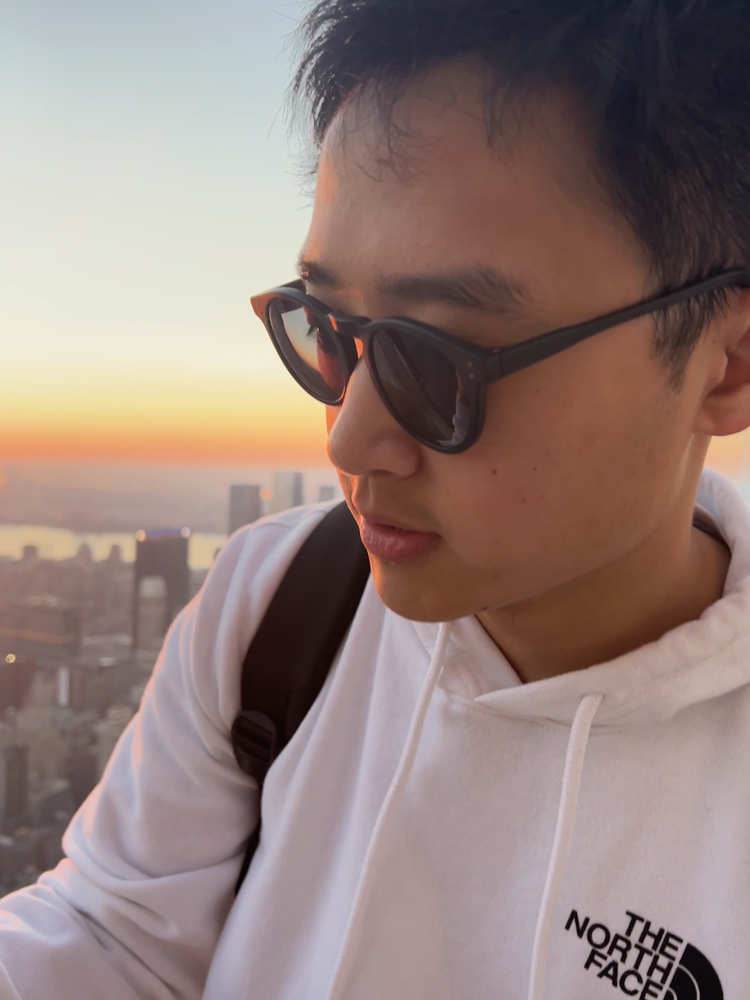

I was born and raised in the beautiful coastal city of Qingdao, China, known for its delicious seafood and famous Tsingtao Beer. Growing up, I was always fascinated with technology and spent much of my free time tinkering with computers and programming. This passion led me to pursue a degree in computer science at Brandeis University.


In my free time, I enjoy exploring the city, trying new foods, and staying active through working out and hiking. I am also a big fan of reading and watching movies, which help me to relax and recharge after a long day of studying and coding.
-Sleeping😴 -Napping😪 -Eating😋 -Traveling😎
Food |
Drink |
Movie |
Musician | Programming Language |
|---|---|---|---|---|
Barbecue🍗, Hot Pot🍲, Greasy Beef🐂 |
Tea🍵 |
Legends of the Fall🤠 |
J.S. Bach🎵 |
Python🐍 |